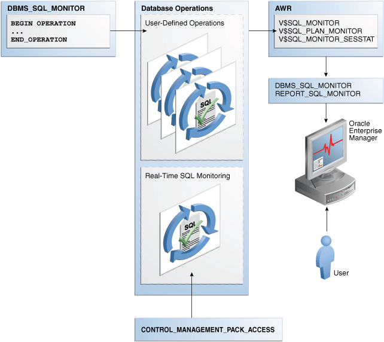

21 Monitoring Database Operations
This chapter describes how to monitor SQL and PL/SQL.
This chapter contains the following topics:
- About Monitoring Database Operations
A database operation is a user-defined logical object that includes session activity between two points in time. - Enabling and Disabling Monitoring of Database Operations
Use initialization parameters to enable or disable monitoring. - Defining a Composite Database Operation
Defining a database operation involves supplying a name and specifying its beginning and end times. - Monitoring SQL Executions Using Cloud Control
By default, AWR automatically captures SQL monitoring reports in XML format. - Monitoring Database Operations: Scenarios
In these scenarios, you report on both simple and composite database operations.
Parent topic: Monitoring and Tracing SQL
21.1 About Monitoring Database Operations
A database operation is a user-defined logical object that includes session activity between two points in time.
A database operation contains a set of database tasks. A typical task might be a batch job or Extraction, Transformation, and Loading (ETL) processing job.
A database operation is uniquely identified by its name and execution ID. Each operation can be executed many times. Each execution of an operation is uniquely identifiable.
Real-Time Database Operations provides the ability to monitor composite operations automatically. The database automatically monitors parallel queries, DML, and DDL statements as soon as execution begins. By default, Real-Time SQL Monitoring automatically starts when a SQL statement runs in parallel, or when it has consumed at least 5 seconds of CPU or I/O time in a single execution.
The SQL monitoring feature is enabled by default when the STATISTICS_LEVEL initialization parameter is either set to TYPICAL (the default value) or ALL. Using the DBMS_SQL_MONITOR package, you can start and stop, monitor, and report on database operations.
This section contains the following topics:
- Purpose of Monitoring Database Operations
Real-Time SQL Monitoring enables you to monitor a single SQL statement or PL/SQL program unit. - Database Operation Monitoring Concepts
TheDBMS_SQL_MONITORpackage is the key component of the architecture for database operations. - User Interfaces for Database Operations Monitoring
You can monitor database operations from the command line or by using Cloud Control. - Basic Tasks in Database Operations Monitoring
This section explains the basic tasks in database operations monitoring.
See Also:
Oracle Database Concepts for a brief conceptual overview of database operations
Parent topic: Monitoring Database Operations
21.1.1 Purpose of Monitoring Database Operations
Real-Time SQL Monitoring enables you to monitor a single SQL statement or PL/SQL program unit.
Database operations extend Real-Time SQL Monitoring by enabling you to treat a set of statements or procedures as a named, uniquely identified, and re-executable unit. In general, monitoring database operations is useful for the following users:
-
DBAs whose responsibilities include identifying expensive (high response time) SQL statements and PL/SQL functions
-
DBAs who manage batch jobs in a data warehouse or OLTP system
-
Application or database developers who need to monitor the activities related to particular operations, for example, Oracle Data Pump operations
Monitoring database operations is useful for performing the following tasks:
-
Tracking and reporting
Tracking requires first defining a database operation, for example, though
DBMS_SQL_MONITOR, OCI, or JDBC APIs. You can define an operation from a different session from the one that you are currently using. The database infrastructure determines what to track on behalf of the defined operation.You can generate reports on the operation. For example, your tuning task may involve determining which SQL statements run on behalf of a specific batch job, what their execution statistics were, what was occurring in the database when the operation was executing, and so on.
-
Monitoring execution progress
This task involves monitoring a currently executing database operation. The information is particularly useful when you are investigating why an operation is taking a long time to complete.
-
Monitoring resource usage
You may want to detect when a SQL execution uses excessive CPU, issues an excessive amount of I/O, or takes a long time to complete. With Oracle Database Resource Manager (the Resource Manager), you can configure thresholds for each consumer group that specify the maximum resource usage for all SQL executions in the group. When a SQL operation reaches a specified threshold, the Resource Manager can switch the operation into a lower-priority consumer group, terminate the session or call, or log the event. You can then monitor these SQL operations.
-
Tuning for response time
When tuning a database operation, you typically aim to improve the response time. Often the database operation performance issues are mainly SQL performance issues.
This section contains the following topics:
21.1.2 Database Operation Monitoring Concepts
The DBMS_SQL_MONITOR package is the key component of the architecture for database operations.
This section contains the following topics:
- About the Architecture of Real-Time SQL Monitoring
Real-Time SQL Monitoring is a built-in database infrastructure that helps you identify performance problems with long-running and parallel SQL statements. - When the Database Monitors Operations
Monitoring of operations depends on whether the database operation is simple or composite. - Attributes of composite Database Operations
TheDBMS_SQL_MONITOR.BEGIN_OPERATIONfunction defines a database operation.
Parent topic: About Monitoring Database Operations
21.1.2.1 About the Architecture of Real-Time SQL Monitoring
Real-Time SQL Monitoring is a built-in database infrastructure that helps you identify performance problems with long-running and parallel SQL statements.
Real-Time SQL Monitoring is a feature of the Oracle Database Tuning Pack. Database operations are enabled when the CONTROL_MANAGEMENT_PACK_ACCESS initialization parameter is set to DIAGNOSTIC+TUNING (default).
The following figure gives an overview of the architecture for Real-Time SQL Monitoring.
Figure 21-1 Architecture for Real-Time SQL Monitoring
Description of "Figure 21-1 Architecture for Real-Time SQL Monitoring"
As shown in the preceding graphic, the DBMS_SQL_MONITOR PL/SQL package defines database operations. After monitoring is initiated, the database stores metadata about the database operations in AWR, and the data itself in both AWR and ASH. The database refreshes monitoring statistics in close to real time as each monitored statement executes, typically once every second. The database stores the operational data (the statements and metadata about the statements) in the SGA, and then periodically writes it to disk.
Every monitored database operation has an entry in the V$SQL_MONITOR view. This entry tracks key performance metrics collected for the execution, including the elapsed time, CPU time, number of reads and writes, I/O wait time, and various other wait times. The V$SQL_PLAN_MONITOR view includes monitoring statistics for each operation in the execution plan of the SQL statement being monitored. You can access reports by using DBMS_SQL_MONITOR.REPORT_SQL_MONITOR, Oracle Enterprise Manager Cloud Control (Cloud Control), or EM Express.
See Also:
-
Oracle Database Reference to learn about
V$SQL_MONITOR,V$SQL_PLAN_MONITOR, andCONTROL_MANAGEMENT_PACK_ACCESS -
Oracle Database PL/SQL Packages and Types Reference to learn about
DBMS_SQLTUNEandDBMS_SQL_MONITORpackages
Parent topic: Database Operation Monitoring Concepts
21.1.2.2 When the Database Monitors Operations
Monitoring of operations depends on whether the database operation is simple or composite.
This section contains the following topics:
- Simple Database Operations
A simple database operation is a single SQL statement or PL/SQL subprogram. - Composite Database Operations
A composite database operation is activity between two points in time in a database session, with each session defining its own beginning and end points.
Parent topic: Database Operation Monitoring Concepts
21.1.2.2.1 Simple Database Operations
A simple database operation is a single SQL statement or PL/SQL subprogram.
Oracle Database monitors simple database operations when any of the following conditions is true:
-
SQL statements execute in parallel.
-
Tracking for SQL statements is forced by the
/*+ MONITOR */hint. -
SQL statements or PL/SQL subprograms have consumed at least 5 seconds of CPU or I/O time in a single execution.
For simple operations, Real-Time SQL Monitoring helps determine where a currently executing SQL statement is in its execution plan and where the statement is spending its time. You can also see the breakdown of time and resource usage for recently completed statements. In this way, you can better determine why a particular operation is expensive.
Typical use cases for Real-Time SQL Monitoring include the following:
-
A frequently executed SQL statement is executing more slowly than normal. You must identify the root cause of this problem.
-
A database session is experiencing slow performance.
-
A parallel SQL statement is taking a long time. You want to determine how the server processes are dividing the work.
Parent topic: When the Database Monitors Operations
21.1.2.2.2 Composite Database Operations
A composite database operation is activity between two points in time in a database session, with each session defining its own beginning and end points.
SQL statements or PL/SQL subprograms that execute within these two points in time are part of the composite operation. A session can participate in at most one composite database operation at a time.
Oracle Database monitors composite database operations when either of the following conditions is true:
-
You started an operation with
DBMS_SQL_MONITOR.BEGIN_OPERATION, and the operation has consumed at least 5 seconds of CPU or I/O time. -
Tracking for the operations is forced by setting
FORCE_TRACKINGtoYinBEGIN_OPERATION.
In OLTP and data warehouse environments, a job often logically groups related SQL statements. The job can span multiple concurrent sessions. Typical use cases for monitoring composite operations include the following:
-
A periodic batch job containing many SQL statements must complete in a certain number of hours, but took longer than expected.
-
After a database upgrade, the execution time of an important batch job increased. To resolve this problem, you must collect enough relevant statistical data from the batch job before and after the upgrade, compare the two sets of data, and then identify the changes.
-
Packing a SQL tuning set (STS) took far longer than anticipated. To diagnose the problem, you need to know what was being executed over time. Because this issue cannot be easily reproduced, you need to monitor the process while it is running.
See Also:
-
Oracle Database PL/SQL Packages and Types Reference to learn more about
DBMS_SQL_MONITOR
Parent topic: When the Database Monitors Operations
21.1.2.3 Attributes of composite Database Operations
The DBMS_SQL_MONITOR.BEGIN_OPERATION function defines a database operation.
A composite database operation is uniquely identified by the following information:
-
Database operation name
This is a user-created name such as
daily_sales_report. The operation name is the same for a job even if it is executed concurrently by different sessions or on different databases. Database operation names do not reside in different namespaces. -
Database operation execution ID
Two or more occurrences of the same database operation can run at the same time, with the same name but different execution IDs. This numeric ID uniquely identifies different executions of the same database operation.
The database automatically creates an execution ID when you begin a database operation. You can also specify a user-created execution ID.
Optionally, you can specify the session ID and session serial number in which to start the database operations. Thus, one database session can start a database operation defined in a different database session.
The database uses the following triplet of values to identify each SQL and PL/SQL statement monitored in the V$SQL_MONITOR view, regardless of whether the statement is included in a database operation:
-
SQL identifier to identify the SQL statement (
SQL_ID) -
Start execution timestamp (
SQL_EXEC_START) -
An internally generated identifier to ensure that this primary key is truly unique (
SQL_EXEC_ID)
You can use zero or more additional attributes to describe and identify the characteristics of a composite database operation. Every attribute has a name and value. For example, for database operation daily_sales_report, you might define the attribute db_name and assign it the value prod.
Parent topic: Database Operation Monitoring Concepts
21.1.3 User Interfaces for Database Operations Monitoring
You can monitor database operations from the command line or by using Cloud Control.
This section contains the following topics:
- Monitored SQL Executions Page in Cloud Control
The Monitored SQL Executions page in Cloud Control, also known as SQL Monitor, displays details of SQL execution. SQL Monitor is the recommended interface for reporting on database operations. - DBMS_SQL_MONITOR Package
TheDBMS_SQL_MONITORpackage defines the beginning and ending of a database operation, and generates a report of the database operations. - Views for Monitoring and Reporting on Database Operations
You can obtain the statistics for database operations using severalV$and data dictionary view.
Parent topic: About Monitoring Database Operations
21.1.3.1 Monitored SQL Executions Page in Cloud Control
The Monitored SQL Executions page in Cloud Control, also known as SQL Monitor, displays details of SQL execution. SQL Monitor is the recommended interface for reporting on database operations.
Statistics at each step of the execution plan are tracked by key performance metrics, including elapsed time, CPU time, number of reads and writes, I/O wait time, and various other wait times. These metrics enable DBAs to analyze SQL execution in depth and decide on the most appropriate tuning strategies for monitored SQL statements.
SQL Monitor Active Reports provide a flash-based interactive report that enables you to save data in an HTML file. You can save this file and view it offline.
This section contains the following topics:
- Accessing the Monitored SQL Executions Page
The Monitored SQL Executions shows information such as the SQL ID, database time, and I/O requests.
Parent topic: User Interfaces for Database Operations Monitoring
21.1.3.1.1 Accessing the Monitored SQL Executions Page
The Monitored SQL Executions shows information such as the SQL ID, database time, and I/O requests.
To access the Monitored SQL Executions page:
-
Log in to Cloud Control with the appropriate credentials.
-
Under the Targets menu, select Databases.
-
In the list of database targets, select the target for the Oracle Database instance that you want to administer.
-
If prompted for database credentials, then enter the minimum credentials necessary for the tasks you intend to perform.
-
From the Performance menu, select SQL Monitoring.
The Monitored SQL Executions page appears.
Parent topic: Monitored SQL Executions Page in Cloud Control
21.1.3.2 DBMS_SQL_MONITOR Package
The DBMS_SQL_MONITOR package defines the beginning and ending of a database operation, and generates a report of the database operations.
Table 21-1 DBMS_SQL_MONITOR
| Subprogram | Description |
|---|---|
|
|
This function starts a database operation in the current session. This function associates a session with a database operation. Starting in Oracle Database 12c Release 2 (12.2), you can use |
|
|
This function ends a database operation in the current session. If the specified database operation does not exist, then this function has no effect. |
|
|
This function builds a detailed report with monitoring information for a SQL statement, PL/SQL block, or database operation. For each operation, it gives key information and associated global statistics. Use this function to get detailed monitoring information for a database operation. The target database operation for this report can be:
Use the |
|
|
This function is identical to the |
|
|
This function builds a report for all or a subset of database operations that have been monitored by Oracle Database. |
|
|
This function is identical to the |
See Also:
Oracle Database PL/SQL Packages and Types Reference to learn about the DBMS_SQL_MONITOR package
Parent topic: User Interfaces for Database Operations Monitoring
21.1.3.3 Views for Monitoring and Reporting on Database Operations
You can obtain the statistics for database operations using several V$ and data dictionary view.
The following table summarizes these views.
Table 21-2 Views for Database Operations Monitoring
| View | Description |
|---|---|
|
This view displays metadata about XML reports captured into Automatic Workload Repository (AWR). Each XML report contains details about some activity of a component. For example, a SQL Monitor report contains a detailed report about a particular database operation. Important columns include:
|
|
|
This view displays details about each report captured in AWR. Metadata for each report appears in the |
|
|
This view contains global, high-level information about simple and composite database operations. For simple database operations, monitoring statistics are not cumulative over several executions. In this case, one entry in For simple database operations, For composite database operations, each row contains an operation whose statistics are accumulated over the SQL statements and PL/SQL subprograms that run in the same session as part of the operation. The primary key is the combination of the columns |
|
|
This view contains the statistics for all sessions involved in the database operation. Most of the statistics are cumulative. The database stores the statistics in XML format instead of using each column for each statistic. This view is primarily intended for the report generator. Oracle recommends that you use |
|
|
This view contains monitoring statistics for each step in the execution plan of the monitored SQL statement. The database updates statistics in |
You can use the preceding V$ views with the following views to get additional information about the monitored execution:
-
V$ACTIVE_SESSION_HISTORY -
V$SESSION -
V$SESSION_LONGOPS -
V$SQL -
V$SQL_PLAN
See Also:
Oracle Database Reference to learn about the V$ views for database operations monitoring
Parent topic: User Interfaces for Database Operations Monitoring
21.1.4 Basic Tasks in Database Operations Monitoring
This section explains the basic tasks in database operations monitoring.
Basic tasks are as follows:
-
"Enabling and Disabling Monitoring of Database Operations"
This task explains how you can enable automatic monitoring of database operations at the system and statement level.
-
"Defining a Composite Database Operation"
This section explains how you can define the beginning and end of a database operation using PL/SQL.
-
"Monitoring SQL Executions Using Cloud Control"
This section explains how you can generate and interpret reports on a database operation.
Parent topic: About Monitoring Database Operations
21.2 Enabling and Disabling Monitoring of Database Operations
Use initialization parameters to enable or disable monitoring.
This section contains the following topics:
- Enabling Monitoring of Database Operations at the System Level
The SQL monitoring feature is enabled by default when theSTATISTICS_LEVELinitialization parameter is either set toTYPICAL(the default value) orALL. SQL monitoring starts automatically for all long-running queries. - Enabling and Disabling Monitoring of Database Operations at the Statement Level
When theCONTROL_MANAGEMENT_PACK_ACCESSinitialization parameter is set toDIAGNOSTIC+TUNING, you can use hints to enable or disable monitoring of specific SQL statements.
Parent topic: Monitoring Database Operations
21.2.1 Enabling Monitoring of Database Operations at the System Level
The SQL monitoring feature is enabled by default when the STATISTICS_LEVEL initialization parameter is either set to TYPICAL (the default value) or ALL. SQL monitoring starts automatically for all long-running queries.
Prerequisites
Because SQL monitoring is a feature of the Oracle Database Tuning Pack, the CONTROL_MANAGEMENT_PACK_ACCESS initialization parameter must be set to DIAGNOSTIC+TUNING (the default value).
Assumptions
This tutorial assumes the following:
-
The
STATISTICS_LEVELinitialization parameter is set toBASIC. -
You want to enable automatic monitoring of database operations.
To enable monitoring of database operations:
-
Connect SQL*Plus to the database with the appropriate privileges, and then query the current database operations settings.
For example, run the following SQL*Plus command:
SQL> SHOW PARAMETER statistics_level NAME TYPE VALUE ----------------------------------- ----------- ----- statistics_level string BASIC -
Set the statistics level to
TYPICAL.For example, run the following SQL statement:
SQL> ALTER SYSTEM SET STATISTICS_LEVEL='TYPICAL';
See Also:
Oracle Database Reference to learn about the STATISTICS_LEVEL and CONTROL_MANAGEMENT_PACK_ACCESS initialization parameter
Parent topic: Enabling and Disabling Monitoring of Database Operations
21.2.2 Enabling and Disabling Monitoring of Database Operations at the Statement Level
When the CONTROL_MANAGEMENT_PACK_ACCESS initialization parameter is set to DIAGNOSTIC+TUNING, you can use hints to enable or disable monitoring of specific SQL statements.
The database monitors SQL statements or PL/SQL subprograms automatically when they have consumed at least 5 seconds of CPU or I/O time in a single execution. The MONITOR hint is useful to enforce monitoring of statements or subprograms that do not meet the time criteria.
Two statement-level hints are available to force or prevent the database from monitoring a SQL statement. To force SQL monitoring, use the MONITOR hint:
SELECT /*+ MONITOR */ SYSDATE FROM DUAL;
This hint is effective only when the CONTROL_MANAGEMENT_PACK_ACCESS parameter is set to DIAGNOSTIC+TUNING. To prevent the hinted SQL statement from being monitored, use the NO_MONITOR reverse hint.
Assumptions
This tutorial assumes the following:
-
Database monitoring is currently enabled at the system level.
-
You want to disable automatic monitoring for the statement
SELECT * FROM sales ORDER BY time_id.
To disable monitoring of database operations for a SQL statement:
-
Execute the query with the
NO_MONITORhint.For example, run the following statement:
SQL> SELECT * /*+NO_MONITOR*/ FROM sales ORDER BY time_id;
See Also:
Oracle Database SQL Language Reference for information about using the MONITOR and NO_MONITOR hints
Parent topic: Enabling and Disabling Monitoring of Database Operations
21.3 Defining a Composite Database Operation
Defining a database operation involves supplying a name and specifying its beginning and end times.
Start a database operation by using the DBMS_SQL_MONITOR.BEGIN_OPERATION function, and end it by using the DBMS_SQL_MONITOR.END_OPERATION procedure.
To begin the operation in a different session, specify the combination of session_id and serial_num. The BEGIN_OPERATION function returns the database operation execution ID. If dbop_exec_id is null, then the database generates a unique value.
A single namespace exists for database operations, which means that name collisions are possible. Oracle recommends the following naming convention: component_name.subcomponent_name.operation name. For operations inside the database, Oracle recommends using ORA for the component name. For example, a materialized view refresh could be named ORA.MV.refresh. An E-Business Suite payroll function could be named EBIZ.payroll.
To create a database operation in the current session:
-
In SQL*Plus or SQL Developer, log in to the database as a user with the necessary privileges.
-
Start the operation by using
DBMS_SQL_MONITOR.BEGIN_OPERATION.This function returns the database operation execution ID. The following example creates the operation named
ORA.sales.agg, and stores the execution ID in a SQL*Plus variable:VARIABLE exec_id NUMBER; BEGIN :exec_id := DBMS_SQL_MONITOR.BEGIN_OPERATION ( dbop_name => 'ORA.sales.agg' ); END; / -
Execute the SQL statements or PL/SQL programs that you want to monitor.
-
End the operation by using
DBMS_SQL_MONITOR.END_OPERATION.The following example ends operation
ORA.sales.agg:BEGIN DBMS_SQL_MONITOR.END_OPERATION ( dbop_name => 'ORA.sales.agg', dbop_eid => :exec_id ); END; /
Example 21-1 Creating a Database Operation
The following example illustrates how to use the DBMS_SQL_MONITOR package to begin and end a database operation in a different session. This example assumes the following:
-
You are an administrator and want to monitor statements in a session started by user
sh. -
You want to monitor queries of the
sh.salestable andsh.customerstable. -
You want these two queries to be monitored as a database operation named
sh_count.
Table 21-3 Creating a Database Operation
| SYSTEM Session | SH Session | DESCRIPTION |
|---|---|---|
|
n/a |
Start SQL*Plus and connect as a user with the administrator privileges. |
|
n/a |
|
In a different terminal, start SQL*Plus and connect as a user as user |
|
n/a |
In the |
|
n/a |
In the |
|
n/a |
|
In the |
|
n/a |
End the database operation by specifying the operation name and execution ID. |
|
n/a |
Query the metadata for the |
|
n/a |
|
To collect changed session information, execute a query that performs a round trip to the database. |
|
n/a |
The status of the operation is now updated to |
Parent topic: Monitoring Database Operations
21.4 Monitoring SQL Executions Using Cloud Control
By default, AWR automatically captures SQL monitoring reports in XML format.
The reports capture only SQL statements that are not executing or queued and have finished execution since the last capture cycle. AWR captures reports only for the most expensive statements according to elapsed execution time.
The Monitored SQL Executions page in Enterprise Manager Cloud Control (Cloud Control) summarizes the activity for monitored statements. You can use this page to drill down and obtain additional details about particular statements. The Monitored SQL Executions Details page uses data from several views, including the following:
-
GV$SQL_MONITOR -
GV$SQL_PLAN_MONITOR -
GV$SQL_MONITOR_SESSTAT -
GV$SQL -
GV$SQL_PLAN -
GV$ACTIVE_SESSION_HISTORY -
GV$SESSION_LONGOPS -
DBA_HIST_REPORTS -
DBA_HIST_REPORTS_DETAILS
Assumptions
This tutorial assumes the following:
-
The user
shis executing the following long-running parallel query of the sales made to each customer:SELECT c.cust_id, c.cust_last_name, c.cust_first_name, s.prod_id, p.prod_name, s.time_id FROM sales s, customers c, products p WHERE s.cust_id = c.cust_id AND s.prod_id = p.prod_id ORDER BY c.cust_id, s.time_id; -
You want to ensure that the preceding query does not consume excessive resources. While the statement executes, you want to determine basic statistics about the database operation, such as the level of parallelism, the total database time, and number of I/O requests.
-
You use Cloud Control to monitor statement execution.
Note:
To generate the SQL monitor report from the command line, run the
REPORT_SQL_MONITORfunction in theDBMS_SQLTUNEpackage, as in the following sample SQL*Plus script:VARIABLE my_rept CLOB BEGIN :my_rept :=DBMS_SQLTUNE.REPORT_SQL_MONITOR(); END; / PRINT :my_rept
To monitor SQL executions:
-
Access the Monitored SQL Executions page, as described in "Monitored SQL Executions Page in Cloud Control".
In the following graphic, the top row shows the parallel query.
In this example, the query has been executing for 1.4 minutes.
-
Click the value in the SQL ID column to see details about the statement.
The Monitored SQL Details page appears.
The preceding report shows the execution plan and statistics relating to statement execution. For example, the Timeline column shows when each step of the execution plan was active. Times are shown relative to the beginning and end of the statement execution. The Executions column shows how many times an operation was executed.
-
In the Overview section, click the link next to the SQL text.
A message shows the full text of the SQL statement.
-
In the Time & Wait Statistics section, next to Database Time, move the cursor over the largest portion on the bar graph.
A message shows that user I/O is consuming over half of database time.
Database Time measures the amount of time the database has spent working on this SQL statement. This value includes CPU and wait times, such as I/O time. The bar graph is divided into several color-coded portions to highlight CPU resources, user I/O resources, and other resources. You can move the cursor over any portion to view the percentage value of the total.
-
In the Details section, in the IO Requests column, move the cursor over the I/O requests bar to view the percentage value of the total.
A message appears.
In the preceding graphic, the IO Requests message shows the total number of read requests issued by the monitored SQL. The message shows that read requests form 80% of the total I/O requests.

See Also:
-
Cloud Control Online Help for descriptions of the elements on the Monitored SQL Executions Details page, and for complete descriptions of all statistics in the report.
-
Oracle Database Reference to learn about
V$SQL_MONITORand related views for database operations monitoring
Parent topic: Monitoring Database Operations
21.5 Monitoring Database Operations: Scenarios
In these scenarios, you report on both simple and composite database operations.
This section contains the following topics:
- Reporting on a Simple Operation: Scenario
In this scenario, a single query should have completed in seconds, but is still running after several minutes. - Reporting on a Composite Operation: Scenario
This scenario creates a composite operation and generates an active report.
Parent topic: Monitoring Database Operations
21.5.1 Reporting on a Simple Operation: Scenario
In this scenario, a single query should have completed in seconds, but is still running after several minutes.
The user sh is running a query, which is not completing. By querying V$SQL, you know the SQL ID of the query is fbjymtacazga2. You decide to use SQL Monitor for diagnosis.
-
Start SQL*Plus, and log in to the database as an administrator.
-
Obtain a text report by invoking
DBMS_SQL_MONITOR.REPORT_SQL_MONITOR:SET LONG 1000000 VARIABLE my_rept CLOB; BEGIN :my_rept := DBMS_SQL_MONITOR.REPORT_SQL_MONITOR( sql_id => 'fbjymtacazga2', report_level => 'ALL', TYPE => 'text'); END; / PRINT :my_reptPartial sample output appears below:
SQL Text ------------------------------ SELECT s.prod_id, c.cust_last_name FROM sales s, customers c ORDER BY prod_id Global Information ------------------------------ Status : EXECUTING Instance ID : 1 Session : SH (31:25365) MY_REPT -------------------------------------------------------------------------------- SQL ID : fbjymtacazga2 SQL Execution ID : 16777216 Execution Started : 10/03/2017 13:07:39 First Refresh Time : 10/03/2017 13:07:43 Last Refresh Time : 10/03/2017 13:10:03 Duration : 145s Module/Action : SQL*Plus/- Service : SYS$USERS Program : sqlplus@myhost (TNS V1-V3) Global Stats MY_REPT -------------------------------------------------------------------------------- ========================================================================= | Elapsed | Cpu | IO | Buffer | Read | Read | Write | Write | | Time(s) | Time(s) | Waits(s) | Gets | Reqs | Bytes | Reqs | Bytes | ========================================================================= | 157 | 129 | 28 | 10328 | 28974 | 5GB | 45028 | 10GB | ========================================================================= SQL Plan Monitoring Details (Plan Hash Value=2036849021) ================================================================================ ================================================================================ =================================== MY_REPT -------------------------------------------------------------------------------- | Id | Operation | Name | Rows | Cost | Time | Start | Execs | Rows | Read | Read | Write | Write | Mem | Temp | Activity | Activity Detail | | | | | (Estim) | | Active(s) | Active | | (Actual) | Reqs | Bytes | Reqs | Bytes | | | (%) | (# samples) | ... -
Because you want an easy-to-read view of the plan, you generate an active report:
SET TRIMSPOOL ON SET TRIM ON SET PAGES 0 SET LINESIZE 1000 SET LONG 1000000 SET LONGCHUNKSIZE 1000000 SPOOL /tmp/long_sql.htm SELECT DBMS_SQL_MONITOR.REPORT_SQL_MONITOR( sql_id => 'fbjymtacazga2', report_level => 'ALL', TYPE => 'active') FROM DUAL; SPOOL OFFYou open the HTML file in a browser, and then review the report:
The cause of the problem is shown in Line 2: a Cartesian join. The query has no
WHEREclause. Instead of returning around 1 million rows as it would for an inner join ofsalesandcustomers, the query is returning 1.2 billion rows. Sorting the merged data from the two tables is consuming most of the DB time (Line 1).
Parent topic: Monitoring Database Operations: Scenarios
21.5.2 Reporting on a Composite Operation: Scenario
This scenario creates a composite operation and generates an active report.
sh schema into an operation, and then generate a report.
-
In SQL*Plus, log on as an administrative user
SAM. Begin an operation namedSHOP(specifyingforced_trackingto ensure that SQL Monitor tracks the SQL), run four queries, and then end the operation as follows:VARIABLE exec_id NUMBER; BEGIN :exec_id := DBMS_SQL_MONITOR.BEGIN_OPERATION ( dbop_name => 'SHOP', forced_tracking => 'Y' ); END; / SELECT COUNT(*) FROM sh.sales; SELECT COUNT(*) FROM sh.customers; SELECT prod_id, cust_id FROM sh.sales WHERE prod_id < 26 ORDER BY prod_id; SELECT cust_id, cust_first_name, cust_last_name, cust_city FROM sh.customers WHERE cust_id < 30000 ORDER BY cust_id; BEGIN DBMS_SQL_MONITOR.END_OPERATION ( dbop_name => 'SHOP', dbop_eid => :exec_id ); END; / -
To obtain metadata about the operation, including its status and metadata, query
V$SQL_MONITOR(sample output included):COL STATUS FORMAT a10 COL DBOP_NAME FORMAT a10 COL CON_NAME FORMAT a5 SELECT STATUS, SQL_ID, DBOP_NAME, DBOP_EXEC_ID, TO_CHAR(ELAPSED_TIME/1000000,'000.00') AS ELA_SEC FROM V$SQL_MONITOR WHERE DBOP_NAME = 'SHOP'; STATUS SQL_ID DBOP_NAME DBOP_EXEC_ID ELA_SEC ---------- ------------- ---------- ------------ ------- DONE SHOP 3 001.34 -
To obtain metadata about the SQL Monitor report, call
DBMS_SQL_MONITOR.REPORT_SQL_MONITOR(sample output included):SET LONG 10000000 SET LONGCHUNKSIZE 10000000 SET PAGES 0 SELECT DBMS_SQL_MONITOR.REPORT_SQL_MONITOR( dbop_name => 'SHOP', type => 'TEXT', report_level => 'ALL') AS rpt FROM DUAL; SQL Monitoring Report Global Information ------------------------------ Status : DONE Instance ID : 1 Session : SAM (87:6406) DBOP Name : SHOP DBOP Execution ID : 3 First Refresh Time : 10/03/2017 07:33:32 Last Refresh Time : 10/03/2017 07:34:24 Duration : 52s Module/Action : sqlplus@myhost (TNS V1-V3)/- Service : MYSERVICE Program : sqlplus@myhost (TNS V1-V3) Global Stats ======================================================== | Elapsed | Cpu | IO | Buffer | Read | Read | | Time(s) | Time(s) | Waits(s) | Gets | Reqs | Bytes | ======================================================== | 1.36 | 1.34 | 0.02 | 202 | 583 | 27MB | ======================================================== -
To generate an active HTML report, pass the name of the operation to
DBMS_SQL_MONITOR.REPORT_SQL_MONITOR:SET TRIMSPOOL ON SET TRIM ON SET PAGES 0 SET LINESIZE 1000 SET LONG 1000000 SET LONGCHUNKSIZE 1000000 SPOOL /tmp/shop.htm SELECT DBMS_SQL_MONITOR.REPORT_SQL_MONITOR(dbop_name=>'SHOP',report_level=>'ALL',TYPE=>'active') FROM DUAL; SPOOL OFFThe following graphic shows the active report:
See Also:
Oracle Database PL/SQL Packages and Types Reference to learn more about DBMS_SQL_MONITOR
Parent topic: Monitoring Database Operations: Scenarios